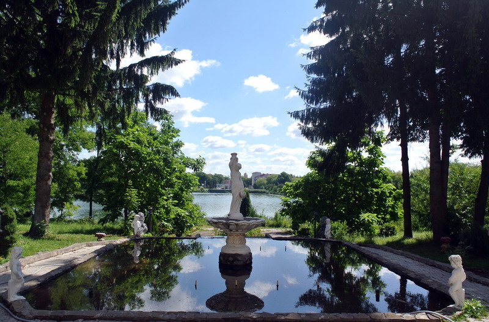
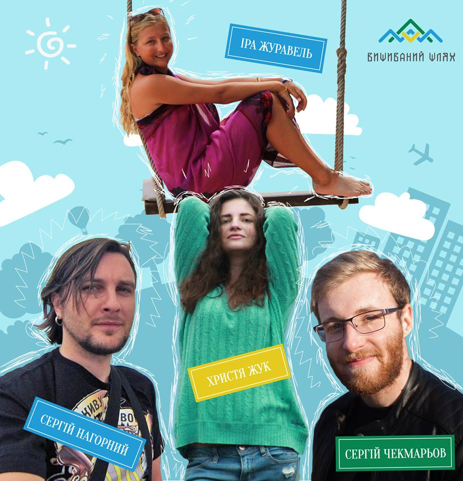
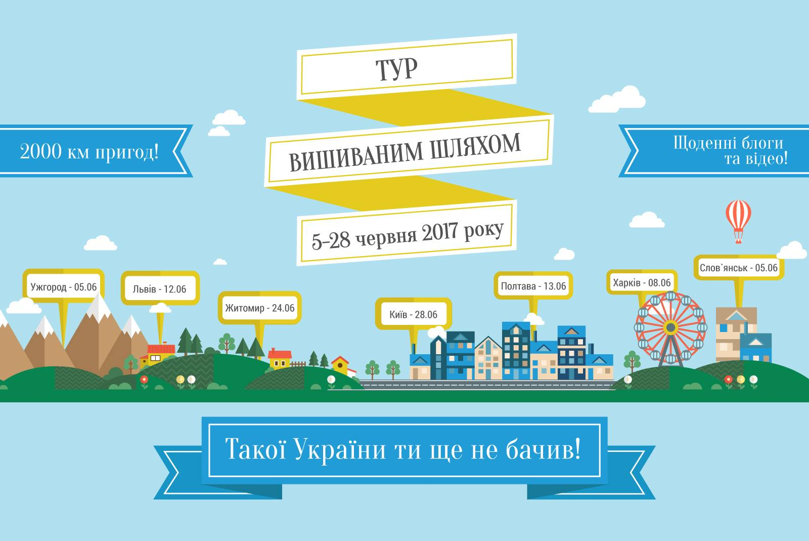
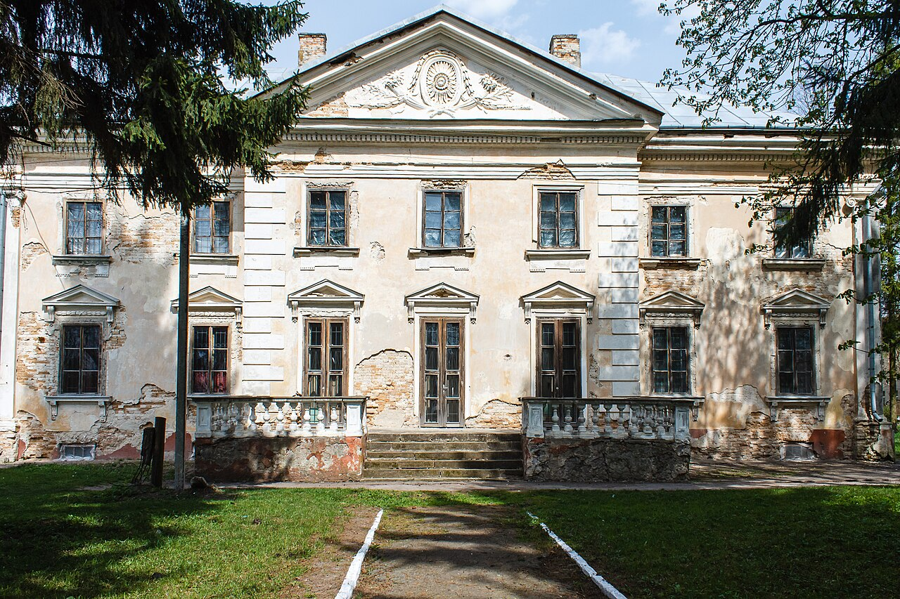
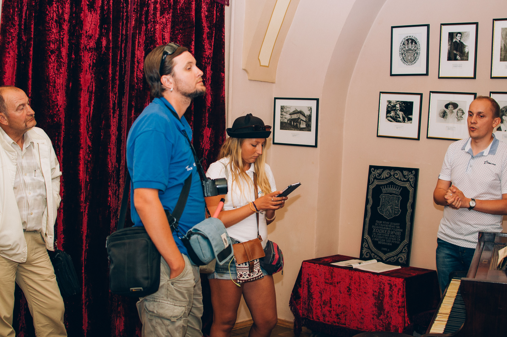
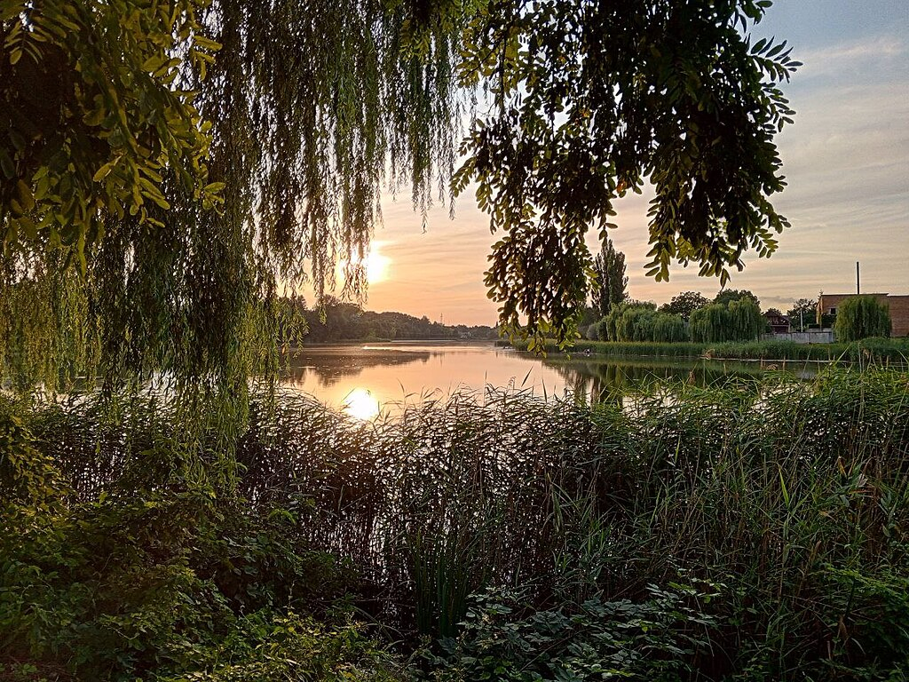

Схилився вечір над Іквою,- Оксана Цуркан, Млинівчанка та патріотка
Понурився прадавній в’яз,
Десь в далині сміється молодь
Та птах співає все тихіш щораз.
Задумаюсь, і десь в дитинство як порину,
У ту ж природу та Ікву,
Так защемить, доболю, добре стане,
Ні, з Млинова ніколи не піду...
Такі рядки надихнули мене як дилетанта-аматора та зовсім не творця віршованого слова не даремно. А ось про все детально розповім далі.
19 червня у Млинові відбулася подія не стандартна за своїм характером, але особлива за своїм призначенням та ідеєю. У рамках туристичного проекту"Тур вишиваним шляхом" Млинів відвідали 2 тревел–блогери Ірина Журавель та Сергій Нагорний. У чому ж полягала значимість цієї події запитаєте Ви? Заінтригую та занурюсь в історію створення ідеї так званого Вишиваного шляху.

У 2011 році автор проекту Анатолій Циркун подолав всесвітньо відомий Шлях Пілігримів в Іспанії- El Camino de Santiago . Цим шляхом уже понад півстоліття подорожують мандрівники з усього світу. Анатолій був у дорозі 11 днів і пройшов пішки близько 300 км. Це була подорож, що змінила його подальше життя!
Надихнувшись і перейнявши міжнародний досвід, організатори «Вишиваного шляху» вирішили розробити унікальний туристичний шлях через всю Україну, який би інтегрувався в європейську мережу маршрутів.
Під час розробки концепту проекту автори зіткнулись із двома проблемами:
Туристична Україна, на жаль, поки залишається незвіданою не тільки для іноземців, але й для самих українців.
Україна відома світові здебільшого через Революцію Гідності та тими трагічними подіями, що нині відбуваються в нашій державі.
Проект вирішуватиме ці дві проблеми водночас. Саме зараз потрібно розпочати активну роботу над розвитком внутрішнього туризму та створенням іміджу України як цікавої, різноманітної, туристично привабливої країни.
Cловом, ідейні українці створили туристичний пішохідний та велосипедний маршрут нашою країною:
він пролягає через 10 областей;
від Ужгорода до Харкова та в буквальному і символічному сенсі;
об'єднує Західну та Східну частини нашої з вами Батьківщини.

Дізнавшись про проект, підхопивши ідею показати незвідану Україну, запропонувала організаторам змінити вже узгоджений маршрут, який мав проходити на Рівненщині лише через Дубно та Остріг, та завітати до нашого мальовничого селища. І ось, 19 червня «Вишиваний шлях» довів досвідчених мандрівників і до Млинова.
 
Почалося все звісно із пам’яток архітектури та відвідин Млинівського краєзначого музею . Не злякали гостей навіть таємничі історії про «білу пані» , що іноді холодить серця хранителям музейних експонатів.
За цікавою та змістовною розмовою про проект та подорожі у конференц-залі приміщення колишнього темплюма графів Ходкевичів гості та присутні не зважали на час, спілкувались невимушено, особливо наша млинівська перспективна молодь, яка впереше у Млинові побувала на такому заході. Вразили гостей і українська пісня у виконанні бандуристки , і, назвичайно колоритний, захопливий майстер-клас та частування медової продукції від неординарного викладача бджолярної справи Млиніського технічного коледжу.
Спокійні та заколихані, не то гарною українською піснею, не то ароматом солодкої медовухи, наші блогери Ірина та Сергій змушені були знову зібрати усі сили та активізуватись, адже їх чекала «Пательня» та гарячі ідеї від таких же по духу та трішки молодших за віком хлопців і дівчат.
Молодь не обійшлася без креативу, спершу поринулася у минуле - як все починалось, влаштувала низку фото-спогадів, поділилась планими на майбутнє та вже реалізованими заходами, а потім, показала святая-святих – так би мовити «бренд-офіс» «Пательні», місце на своєрідній сцені, де творяться ідеї та релаксуються мізки. Своїми думками та поглядами на життя, хлопці та дівчата не залишили байдужими серця блогерів, показали, що є майбутнє в української нації та його творитимуть і наші млинівчани.Майстер-класом по колу «Пательні» на фіксах (для тих, хто не в темі – своєрідний велосипед з фіксованою передачею у якого відсутній вільний хід) та загальним селфі наші майбутні фізики, хіміки, письменники, бізнесмени, реформатори залишились на «Пательні» ділитись враженнями, а наші гості нарешті вирушили до місця релаксації та наповнення творчої енергіїю

На березі річки, небайдужі млинівчани влаштували блогерам справжню еко-вечерю, що готувалася на вогні, приправлена чистими думками та гарним настроєм. І юшка, і м’ясо вдалися на славу, після тривалих тревел-пригод наші подорожуючі змогли цілком розслабитись та зарядитись позитивом від гостинного прийому й тихеньких неквапливих хвиль задумливої Ікви.
Із добрими помислами та ситим шлунком гості приготували свої наплічники, налаштувавшись на ночівлю. Проте, і тут, ми вирішили не закінчувати дивувати гостей, а підтримали ідею хопців із «Пательні», які влаштували прогулянку на човні нашою чарівною річкою. А наступного дня мандрівників уже чекав Остріг, нові пригоди та нові обличчя...
28 червня у Києві відбувся святковий ВелоФініш Туру. Четверо мандрівників очолювали фінішний вело парад, який рухався двома колонами - від станції метро Героїв Дніпра та від станції метро Виставковий центр до Майдану Незалежності.
Проект є некомерційним, в роботу залучено більше 40 локальних координаторів, що працюють на ентузіазмі та волонтерських засадах.Організатори вірять, що проект «Тур Вишиваним Шляхом» отримає широке медійне висвітлення та надихне тисячі українців подорожувати нашою прекрасною країною.
| Проект Велика Ідея | Млинівщина туристична |
|---|---|
|
|
Нагадаю, що сторінка створена cлухачкою курсів Pівненського центру професійно-технічної освіти Державного центру зайнятості, яка мандрує HTML шляхом, а попереду ще тернисті та незвідані горизонти Web-дизайну. Отже, прошу, будьте поблажливими у коментарях!